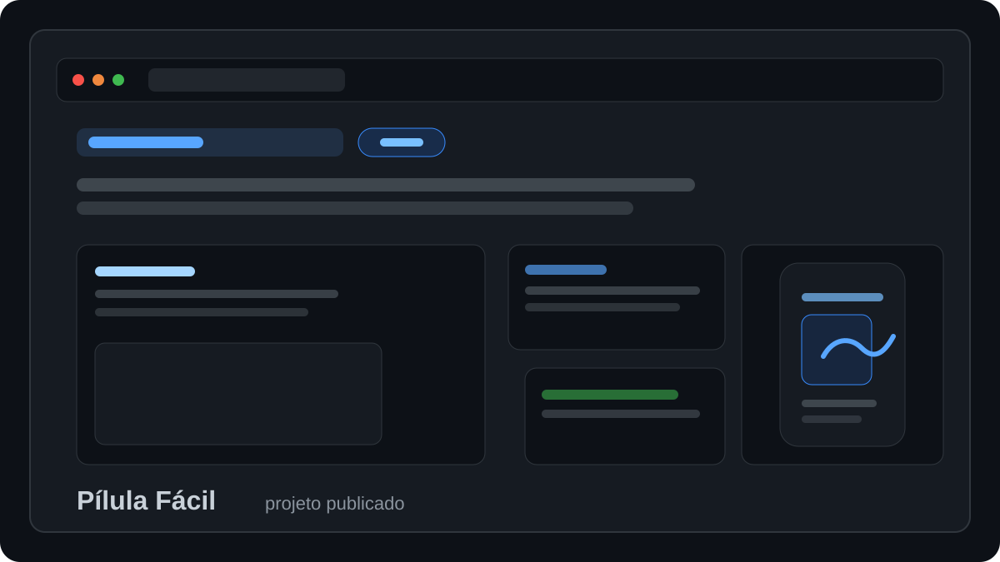
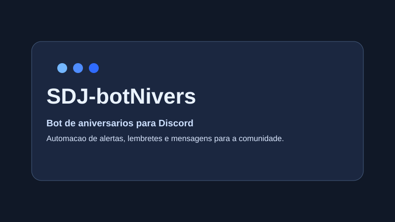

O Bula Fácil traduz bulas de medicamentos para uma linguagem clara, com áudio, organização de horários e orientação segura para toda a família.
Tenho 21 anos e moro no Brasil. Atualmente estou cursando ciência da computação, sou apaixonado por entender as coisas ao meu redor e estou sempre em busca de novos aprendizados e desafios.

O Bula Fácil traduz bulas de medicamentos para uma linguagem clara, com áudio, organização de horários e orientação segura para toda a família.

Empresa de software com foco em soluções inovadoras, transformação digital e desenvolvimento orientado a resultados.

Bot para automação de aniversários no WhatsApp, com lembretes de datas e fluxo de mensagens para a comunidade.

Loja especializada em peças para carros antigos, com variedade de autopeças e acessórios para veículos.

Mini fórum inspirado no micro reddit, publicado no GitHub, com estrutura enxuta para discussões e posts.

Aplicação web para controle de produção, organização de processos e acompanhamento operacional.

Curso de Arrais Amador e Motonauta com habilitação náutica oficial, aula prática inclusa e certificação válida por 10 anos.

Site institucional para serviços de polimento em metais, com foco em contato rápido e orçamento sem compromisso.

Chatbot com LLM e RAG para respostas contextualizadas, integrando busca de conhecimento e interface web.

Aplicativo desktop em Ruby com interface gráfica para anotações rápidas e uso cotidiano.
Conhecimentos e Habilidades (Nível Intermediário)
Redes Sociais
GitHub
LinkedIn
Instagram